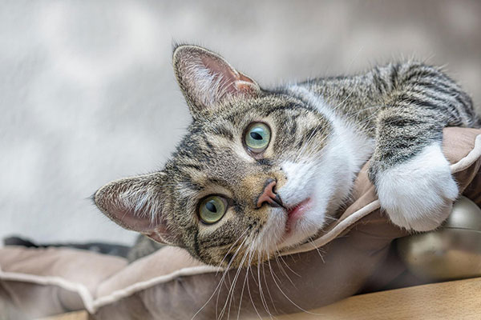
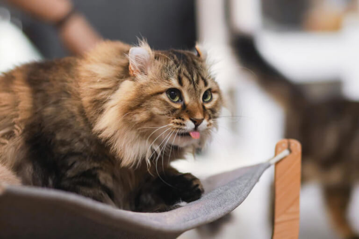
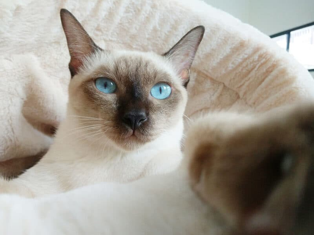
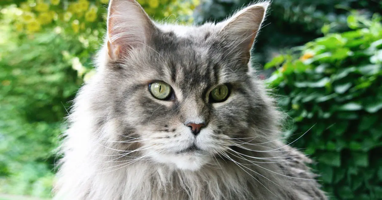

Some types of cats
Domestic Shorthair

Not to be confused with the American Shorthair, the Domestic Shorthair is often considered to be the “mutt” of cat breeds due to their mixed and unknown heritages. Because of this, Domestic Shorthairs can present a variety of physical attributes, but they are generally medium-sized with round faces, sleek and soft short coats, and can be any mix of colors.
It’s believed that after being domesticated in Egypt in around 2000 BC, cats like the Domestic Shorthair made their way around the globe. These cats were favored as mousers and considered hard-working. Domestic Shorthair cats live an average of 12-14 years but have been known to live much longer.
Domestic Longhair

Like Domestic Shorthair cats, Domestic Longhair cats have long hair and are of unknown ancestry. They’re especially common for this reason—most cats aren’t purebreds! Also, like their shorthaired friends, they were brought to North America from Europe via ships.
These cats come in a full spectrum of colors, from orange to white and black to grey. Their coat is typically a few inches long, and they have distinct tufts around their ears and on the bottoms of their paws. Domestic Longhair cats benefit from regular grooming to help maintain their lovely coats.
Their exact history is a mystery, but some speculate the recessive gene for long hair was pruned specifically by people with cats in colder climates like Russia, Iran, and Turkey. Domestic Longhair cats have a reputation for being great hunters, making them particularly attractive to humans looking to control rodents.
Siamese

perhaps one of the most disticntive breeds, Siamese cats are most often cream-colored with grey-brown paws and icy blue eyeS. Everything about Siamese is a bit pointier than other breeds, from the large, triangular ears to their delicate paws. They'll often have the same grey-brown coloring on their ears and face. Siamese cats are not breat to come in different colors and patterns
Their personalities are often busy and talkative, making them excellent companions for equally active people. They prefer to not be left alone for long periods and may need more play time than your average cat. Siamese cats are also known for being highly intelligent.
Siamese get their name from their origin country: Thailand. Before Thailand was renamed in 1939, the country was called Siam. Siamese cats eventually made their way to Europe, most notably in the late 1800s and later to North America, where Rutherford B. Hayes had a Siamese cat during his presidency from 1877-1881.
Maine Coot

Maine Coons have relatively large bodies and lush, heavy coats. They’re muscular, sturdy, and simultaneously regal in stature. Their large eyes, significant paws, and high cheekbones distinguish them from other cat breeds.
When it comes to personality, these cats toe a line of wanting to be near their humans and needing their own space. They have a reputation for being undeniably attentive and may follow family members around. However, like many cats, they can be cautious around new people. Unlike most other cat breeds, though, Maine Coons have a dense, water-resistant coat and may like a water fountain or even playing in water!
Maine Coons are believed to be native to North America, having been put on the map during the colonial era. Some even tell a tale of Marie Antoinette having several Maine Coon-like cats, which were first brought to the continent during an expedition to save the queen from beheading. The cats made it, but she didn’t. Whether or not this story is true, Maine Coons rose to popularity for their attentive yet rugged personalities.
With the introduction of Persian cats and other long-haired breeds to North America, the Maine Coon was incorrectly declared extinct in the 1950s. Since then, Maine Coons have clawed their way back to the top, becoming the fourth most popular cat breed in America.